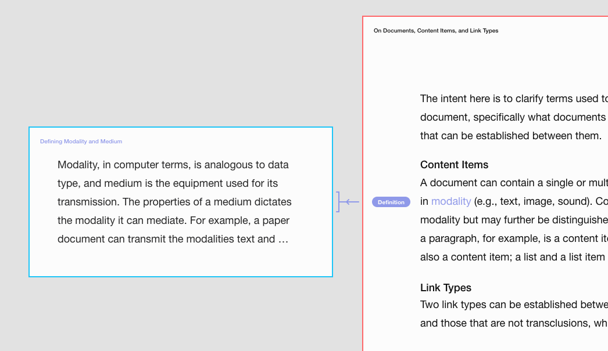
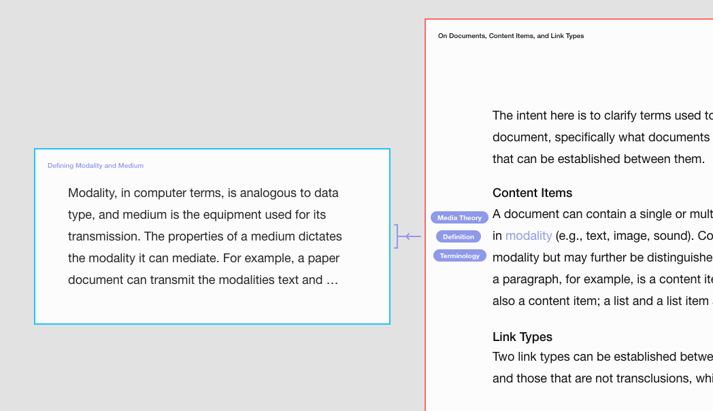

Prototyping: Revising the Visual Distinction of Links and Alias Documents
Alterations and additions:
- Redesign of links to distinguish:
- Link direction
- Link endpoint (by improving the design of the brackets)
- Color coding:
- Title underline is replaced with border color.
- Addition of a location frame of Inventory View while in Lateral Mode.
- Alias documents no longer have icons, but use brightness to indicate that it can be triggered to open the document.
Visual Distinction of Links: Link Type, Link Direction, Link Endpoint
Link types: Transclusion, sequence link (seqlink), taglink.
Link direction: To or from one document and another.
Link endpoints: Distinguishing between a link that points to an entire document and a link that points to a particular part of a document.
Examples of different link types, directions, and endpoints are seen in the image below.
In the image below, the link is visualized as a single element that is separate from the label.

The image below shows what it would look like if multiple labels are attached to a taglink.

Switching View Modes
The expand icon is replaced with a node-link icon, which triggers the movement from Lateral Mode to Inventory View.


Traversing Documents in Lateral Mode Using the Location Frame

Redesign of Alias Documents
The expand icons are removed, now the brightness and change of cursor indicates that clicking an alias document will open the document. Additionally, an ellipsis (…) is added to indicate that the alias documents only reveal part of the linked document.

Interactive Prototype
Traverse documents in the interactive prototype below.
Improvements Due
- In Lateral Mode:
- Hovering a preview should bring that preview to the front.
- Hovering linked text (or preview) should result in active-color linked text.
- Visualization of multiple links to/from the same content item.
- Filter menu
Discarded Attempts
Location Frame Transitions


Visual Distinction of Links
Position and Alignment In the image below, in addition to the left-bracket link, the title, the link, the label, and the linked text are aligned to emphasize that it points from the entire document on the left to a particular part in the document on the right.
In the image below, the label is placed close to the linked text within the open document.

Design of Brackets